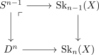

map out of a cw complex and nullhomotopy
Proposition
Let $(X, \emptyset, \mathrm{SK}_n(X))$ be a CW-Complex and $Z$ a topological space Then a continuous map
\begin{align*}
f: X \rightarrow Z
\end{align*}
is precisely given by maps
\begin{align*}
f_n: \mathrm{Sk}_n(X) \rightarrow Z
\end{align*}
together with a nullhomotopy
Proof
using the description as sequential colimit of pushouts

a map $f: X \rightarrow Z$ corresponds to maps
\begin{align*}
D^n \rightarrow Z
\end{align*}
by
- disk as cone of a sphere after using an identification once in a lifetime
- map out of cone as nullhomotopy